Ортодонтія · журнал «ДентАрт» 2021 №2
Корекція трансверзальних порушень без хірургічних втручань
TREATMENT OF TRANSVERSE ANOMALY MALOCCLUSION USING MICROSCREWS IMPLANTS
Порушення оклюзії у трансверзальній площині – це ортодонтична проблема, з якою зустрічаємося часто, вона може проявлятися одностороннім або двостороннім перехресним прикусом.1 Для корекції таких невідповідностей у дітей і підлітків використовують апарати з гвинтом для скелетного розширення верхньої щелепи. Однак із закінченням скелетного росту відбувається склерозування черепно-лицьових швів, включаючи серединно-піднебінний.2 Тому у дорослих такий тип апаратів викликає в основному небажаний дента-альвеолярний нахил зубів і може бути причиною пародонтальних змін.3 З появою мікрогвинтів стало можливим робити переміщення зубів без зміщення сусідніх, використовуючи як опору кісткову тканину.4
У клінічному випадку у пацієнта з порушенням змикання зубів у трансверзальній площині для обмеження побічних ефектів та посилення анкоражу при швидкому піднебінному розширенні було вирішено скористатися мікрогвинтами.
На консультацію звернувся пацієнт 20 років зі скаргами на неправильне положення зубів у верхньому і нижньому зубних рядах (фото 1). З анамнезу з'ясовано, що деякий час тому він проходив курс ортодонтичного лікування, але результатом залишився незадоволений.
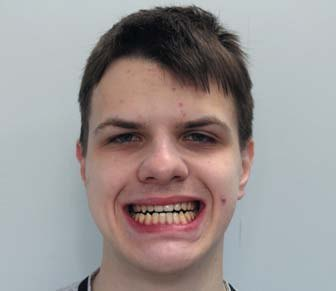
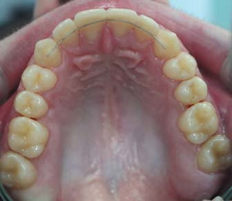
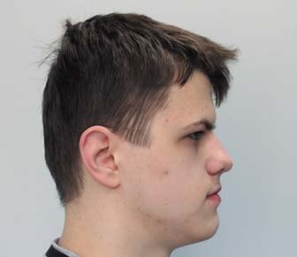
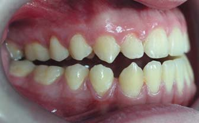
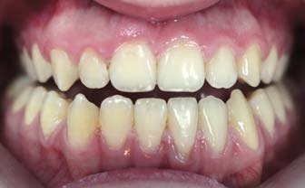
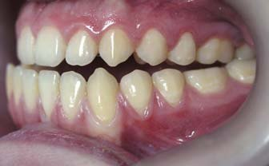
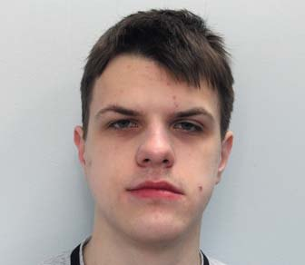
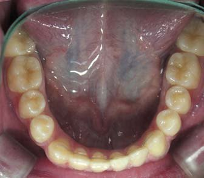
Фото 1. Фотографії пацієнта до лікування.
Зовнішній огляд: обличчя симетричне, пропорційне, тип мезіоцефалічний, профіль прямий, губи у спокої зімкнуті, дихання носове. Подборідна і носогубна складки середньої вираженості. Відкривання рота вільне, симптомів порушення з боку скронево-нижньощелепного суглоба не виявлено.
Внутрішньоротове обстеження: слизова оболонка переддвер'я рота в кольорі не змінена, глибина переддвер'я близько 5 мм, прикріплення вуздечки верхньої губи на відстані 4 мм від міжзубного сосочка, має достатню протяжність і не обмежує рухливість губи. Дентальний клас III з обох боків, ускладнений відкритим і двостороннім перехресним прикусом, зміщення середньої лінії нижнього зубного ряду ліворуч на 2 мм.
Розшифрування телерентгенограми (ТРГ) у бічній проекції до лікування виявило скелетний клас III – кут ANB -2°, кути SNA – 90°, SNB – 92°, нижньощелепний кут FMA (кут між франкфуртською і нижньощелепною площиною) був знижений до 20° (табл. 1). Положення верхніх різців U1 до FH (кут, утворений віссю верхніх центральних різців U1 до франкфуртської горизонталі FH) дорівнює 126°. Співвідношення нижніх центральних різців – IMPA (кут між віссю нижніх центральних різців і нижньощелепною площиною) відповідало 85°. Кут нахилу оклюзійної площини до франкфуртської горизонталі (FH до Occ P) був нижче середніх значень і дорівнював 0,5°. Встановлено симетричне положення передньої лицевої висоти по відношенню до задньої – індекс PFH/AFH становив 0,7 (фото 2).
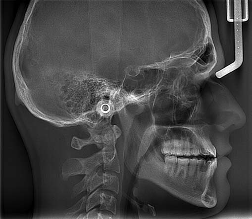
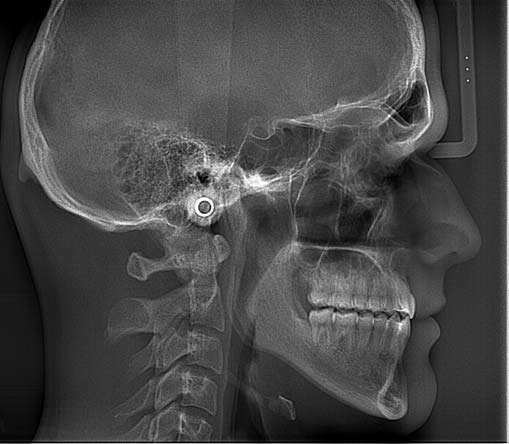
Фото 2. Телерентгенограма в бічній проєкції до і після лікування.
| Цефалометричні кути (°) | Середні значення | До лікування | Після лікування |
|---|---|---|---|
| SNA | 82 | 90 | 90 |
| SNB | 80 | 92 | 91 |
| ANB | 2 | -2 | -1 |
| FMA | 25 | 20 | 21 |
| PFH/AFH | 0,8 | 0,7 | 0,7 |
| FH до Occ P | 10 | 0,5 | 0,5 |
| U1 до FH | 114 | 126 | 116 |
| IMPA | 90 | 85 | 76 |
| Z-аngle | 75 | 96 | 94 |
Показники ТРГ у прямій проєкції до лікування виявили зменшення трансверзального розміру верхньої щелепи: MxW (відстань між найбільш увігнутими поверхнями на виличних відростках JP) – 66 мм (фото 3). NCW (ширина носової порожнини між латеральними опуклими поверхнями бічних стінок) – 30 мм. Ротація HL-Co-Co (кут між горизонтальною площиною HL і лінією, що проходить через верхівки виростків Co-Co) – 4°. Відхилення VL-Me (кут, утворений між VL і лінією, спрямованою до нижнього ментального виступу) до 2° (табл. 2).
Таким чином, аналіз ТРГ у прямій проєкції до лікування виявив зменшення середніх розмірів верхньої щелепи у трансверзальній площині, зміни розташування кісткових структур: ротацію Co-Co і Mental line.
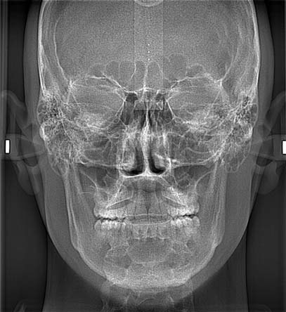
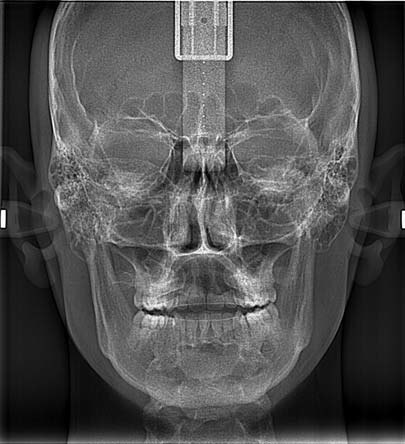
Фото 3. Телерентгенограми у прямій проєкції до і після лікування.
| Цефалометричні значення (°мм) | До лікування | Після лікування |
|---|---|---|
| Bicondylar plane (HL-Co-Co) | 4° | 0 |
| Mental line (VL-Me) | 2° | 0 |
| Maxillary width (MxW) | 66 | 70 |
| Nasal cavity width (NCW) | 30 | 33 |
| Intermolar width palatal cusp (IMW-P) | 49 | 56 |
| Upper Molar Right Angle (UMRA to NF'NF) | 85 | 86 |
| Upper Molar Left Angle (UMLA to NF'NF) | 88 | 89 |
Було запропоновано кілька варіантів лікування. Перший варіант передбачав ортогнатичне хірургічне лікування – сегментарну остеотомію верхньої щелепи за типом Le For I з апаратом для швидкого піднебінного розширення у поєднанні з білатеральною сагітальною спліт-остеотомією гілок нижньої щелепи. Від оперативних втручань пацієнт категорично відмовився. Другий, альтернативний лікувальний план – швидке піднебінне розширення з опорою на базальну кістку з використанням для фіксації мікрогвинтів. Пацієнт обрав другий варіант лікування.
На верхній зубний ряд було встановлено апарат для швидкого піднебінного розширення з гвинтом типу хайракс і отворами для мікрогвинтів по обох боках від серединного піднебінного шва. Під інфільтраційною анестезією (Убістезін 2%, 1 мл) було встановлено 4 мікрогвинти довжиною 10 мм і товщиною 1,5 мм (фото 4). Щоденна активація гвинта на 0,25 мм, або чверть оберту щодня, тривала до потрібного змикання бокових зубів у трансверзальній площині.
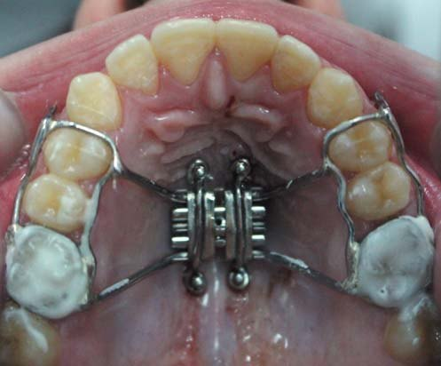
Фото 4. Установлені 4 мікрогвинти на верхній щелепі в зоні серединного піднебінного шва.
Паралельно з розкручуванням гвинта рекомендовано носіння одновісної лицьової маски з еластичними тягами 3/16 extra-heavy, що фіксуються до гачків на інтраоральному апараті протягом не менше 14 годин на добу (фото 5). Після досягнення правильного змикання між молярами на бічних ділянках металеві кільця і балки були видалені, піднебінна частина апарата з мікрогвинтами у ротовій порожнині виконувала ретенційну функцію протягом 6 міс. Корекцію мезіальної оклюзії і вертикальної різцевої дезоклюзії робили за допомогою традиційної механіки лікування.
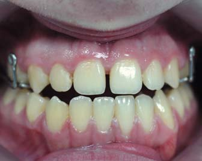
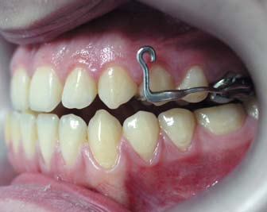
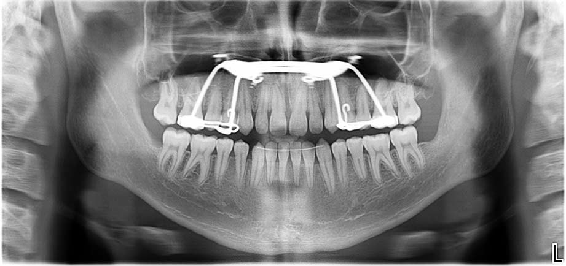
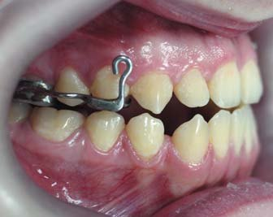
Фото 5. Розклинювання серединного піднебінного шва.
Результати лікування
Незнімну апаратуру зняли через 24 міс. від початку лікування. Аналіз фотографій обличчя виявив помітне поліпшення лицьового профілю. На внутрішньоротових фотографіях визначаються вирівняні зубні дуги (фото 6). Співвідношення між зубними рядами стало по I класу, збіг середніх ліній, фізіологічне змикання на бічних ділянках у трансверзальной площині і вертикально між верхніми і нижніми різцями.
На ТРГ у бічній проєкції після лікування встановлено зміну цефалометричних показників. Знизилися горизонтальні розміри: кут ANB -1° (-2° перед лікуванням), Z-angle зменшений до 94°. Кут U1 до FH становив 116°, IMPA відповідав 76°, Occ P до FH – 0,5°.
Показники цефалометрії у прямій проєкції після лікування показали паралельність Bicondylar plane до HL. Ментальна площина була 0° щодо VL. Ширина верхніх щелеп і носової порожнини збільшена відповідно до 70 мм і 33 мм, міжмолярна дистанція становила 56 мм.
На ортопантомограмі запальних змін не було, корені зубів розташовані паралельно, осередків резорбції коренів не виявлено (фото 7).
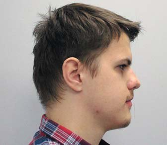
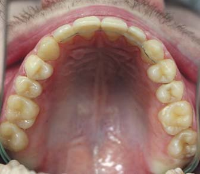
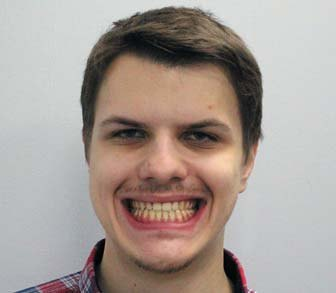
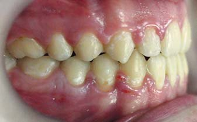
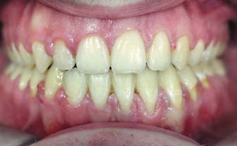
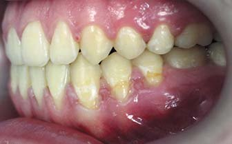
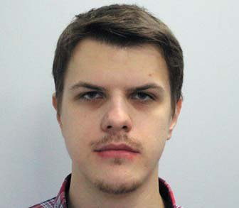
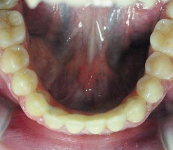
Фото 6. Фото пацієнта після лікування.
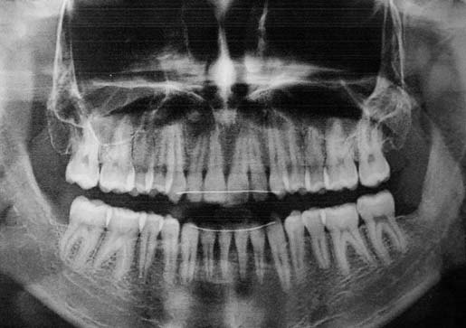
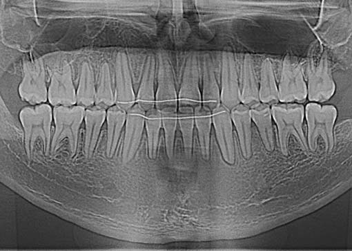
Фото 7. Ортопантомограма до і після лікування.
Аналіз і обговорення
Аномалії оклюзії у трансверзальній площині – це досить часта ортодонтична проблема, її поширеність становить приблизно 23% від загальної кількості зубощелепних порушень.5 У більшості випадків це відбувається за рахунок трансверзального дефіциту ширини верхніх щелеп. Домінуючими чинниками розвитку є генетична спадковість та міофункціональні зміни. З розвитком генетики вдалося виявити специфічний ген, що стимулює рецептори на інтенсивне виділення гормонів росту. Це посилює ріст виросткового хряща, в результаті чого може формуватися нижньощелепна прогнатія, що поєднується з двосторонньою перехресною оклюзією, коли нижні моляри значно перекривають верхні при змиканні.6 Шкідливі звички смоктання пальців, нижнє положення язика у ротовій порожнині можуть порушувати баланс між позаротовими і внутрішньоротовими діями м'язів, перші з яких мають переважну силу, викликаючи звуження верхніх щелеп, внаслідок чого можуть спостерігатися оклюзійні порушення, пошкодження пародонтальних структур, скупченість зубів, дисфункція СНЩС, функціональні зміщення нижньої щелепи і в тяжких випадках – асиметрія обличчя. Крім того, скелетне недорозвинення верхніх щелеп може викликати звуження носової порожнини. Зменшення потоку повітря при вдиху стимулює ротове дихання, вертикальний ріст щелеп і розвиток синдрому апное.7
Перший апарат для розширення верхньої щелепи запропонував Angle у 1860 році. Однак його розробки не були впроваджені в ортодонтичну практику, бо фахівці того часу не змогли оцінити, які наслідки будуть для носового дихання. Ефективність та безпечність цієї техніки були продемонстровані клінічно у працях Derischsweiler (1956) і Korkhaus (1960). Haas (1961) підтвердив лабораторним шляхом на тваринах можливість скелетного роз'єднання двох верхніх щелеп. По обидва боки від розширювального гвинта на слизову оболонку піднебіння він поміщав акрилову пластмасу. Відтак при розкручуванні гвинта зусилля поширювалося, окрім пародонту опорних зубів, і на альвеолярні структури.8
Прийнято вважати, що порушення оклюзії у трансверзальній площині у дітей вимагають негайного лікування після їх виявлення. Це збільшує шанси на морфологічну та функціональну перебудову щелеп, сприяє правильному розвитку обличчя. У підлітковому періоді відбувається прогресуюча кальцифікація і зрощування черепно-лицьових швів, включаючи піднебінний. Через підвищену механічну стійкість цих структур застосування апаратів для швидкого піднебінного розширення (RPE) стає важчим. Вестибулярне відхилення опорних зубів превалює над скелетним роз'єднанням шва. У молодому віці такий підхід має високий ризик побічних ефектів: оголення коренів з альвеолярної кістки, зменшення її ширини і висоти, пародонтальні зміни, відсутність стабільності після ретенційного періоду.
Для обмеження небажаних побічних ефектів перед RPE було запропоновано виконувати сегментарну остеотомію верхніх щелеп за типом Le For I,9 що давало можливість нівелювати основні перешкоди з боку кісткових структур, після чого розкриття піднебінного шва не становило труднощів. Однак такий спосіб хірургічного втручання досить травматичний, вимагає госпіталізації і тривалого періоду відновлення.10
Ряд дослідників запропонували апарати, що фіксуються мікрогвинтами (MARPE) до піднебінної кістки, для посилення скелетного розширення верхньої щелепи.11 Залежно від способу кріплення ці апарати поділяються на два типи. Перші, з накістковою фіксацією (C-еxpander), можуть бути виготовлені з акрилової пластмаси з отворами для мікрогвинтів і розширювальним гвинтом по центру піднебінного шва або мати металевий каркас, що фіксується до піднебіння тимчасовими анкоражними системами. Такий спосіб називається монокортикальним, поскільки мікрогвинти проникають тільки в один шар кортикальної кістки, а не на всю її товщину. Таким чином, сила при розкручуванні гвинта спрямована безпосередньо на базальну кістку, що дає можливість отримати максимальний скелетний ефект і мінімальний зубоальвеолярний, розширення спостерігалося навіть у дорослих без хірургічних втручань. Але якщо при розкручуванні порушується стійкість у кістці хоча б одного опорного мікрогвинта, з'являється висока ймовірність зсуву всієї конструкції і негативного результату. Також C-еxpander не поєднується з лицьовою маскою для протракції верхньої щелепи у пацієнтів з порушенням оклюзії класу III.
Розширювачі другого типу мають кістково-зубну опору (MSE). Спочатку система складалася з основного гвинта MSE-I, схожого з гвинтом типу хайракс, спаяним з кільцями на молярах і наявними отворами для 4-х мікрогвинтів. Пізніше форма гвинта була змінена на MSE-II.12 За основу було взято шестигранний гвинт з однойменним ключем для розкручування. Його форма, витягнута у передньо-задньому напрямку і зменшена у трансверзальному, дає можливість фіксації мікрогвинтами навіть при дуже звужених верхніх щелепах. Довжина таких мікрогвинтів становить не менше 12 мм, а товщина близько 1,5 мм, вони встановлюються бікортикально, тобто крізь обидва шари кортикальної кістки. Технічно вкручування не становить труднощів, хороший огляд місця установки і достатня глибина обох шарів кортикальної кістки забезпечують гарні можливості для скелетного шовного роз'єднання у будь-якому віці. Перші моляри включені в конструкцію не для опори, а для підтримуючої позиції гвинта MSE і мікрогвинтів, що зазнають основного навантаження під час розширення. Для протракціі верхньої щелепи до кілець на молярах можуть бути припаяні дротові крючки.13
Відомо, що порушення первинної стабільності мікрогвинтів відбувається внаслідок докладеної до них надмірної сили. Це викликає напругу в кістковій тканині, що оточує мікрогвинти, збільшує ризик їх деформації і поломки. Дослідження періімплантованої зони на змодельованій віртуальній щелепі виявило різницю між монокортикальним і бікортикальним методами. Монокортикально угвинчені мікрогвинти мали значно менший коефіцієнт факторів стабільності при розширенні. Вони зазнавали найбільшого стресу в місці контакту з кісткою, особливо навколо початкового шару кортикальної кістки. Їх поверхня мала порушену форму, тому поломка була найбільш імовірна.14 Стрес був менше виражений, якщо мікрогвинти були встановлені бікортикально, і такий спосіб їх установки істотно зменшував ризик порушення стійкості. Комп'ютерне 3D моделювання трансверзального скелетного розширення на 5 мм засвідчило, що трансверзальне розширення у монокортикальній моделі значно нижче після кожного обороту гвинта на всіх точках вимірювання.15 Більшість авторів пояснюють ці відмінності значно більшою площею контакту мікрогвинтів із губчастою кісткою при монокортикальній фіксації. Імовірне місце установки мікрогвинтів також створює невідповідність між їх позицією і лінією застосованої сили, що призводить до диспропорційного навантаження в зоні кістка/імплантат/поверхня, знижуючи трансверзальне розширення.16 Бікортикальна фіксація мікрогвинтів дає більш паралельне і корпусне розширення з мінімальною ротацією по центру лобно-носового шва двох верхніх щелеп. Вважають, що це пов'язано з більшою поверхнею зчеплення мікрогвинтів з кортикальною кісткою. Паралельне скелетне розширення більш сприятливе, оскільки збільшується об'єм вільного простору в дистальній зоні верхньої щелепи, де це особливо потрібно, але важкодосяжно у зв'язку з опором крило-піднебінного шва.17
Мікрогвинти, встановлені в серединно-піднебінний шов, мають низький ризик перфорації судинно-нервових структур у передній і задній зоні. У деяких випадках зустрічається аномальне розташування різцевого каналу, відгалуження можуть іти дистально в зону іклів і відкриватися в носову зону. Ризик пошкодження мінімальний, але можливий. Довжину мікрогвинтів найкраще визначати на основі товщини піднебінної кістки в місці планованої установки на підставі комп'ютерної томографії (КТ). Оскільки прорив носової порожнини може супроводжуватися хворобливістю і запальними явищами, угвинчування мікрогвинтів на бічні ділянки твердого піднебіння пов'язане з великим ризиком, поскільки з великого піднебінного отвору виходить судинно-нервовий пучок з великою кількістю анастомозів.
Протоколи розкручування центрального гвинта для скелетного розширення верхньої щелепи RPE і MARPE абсолютно різні. У більшості RPE апаратів застосовується напівшвидкий спосіб активації. Величина разового розширення становить 0,25 мм, або чверть оберту щодня, до необхідного змикання бокових зубів. За такого підходу скелетне розширення становить 40%, дентальне – 60%. Повільною активацією 0,25 мм 1-2 рази на тиждень досягається в основному зубоальвеолярний ефект. Швидке розширення на 0,5-1 мм на день розвиває значну силу і має невеликий зубоальвеолярний ефект. Дистракція відбувається занадто швидко, мікроциркуляція знижується, волокна колагену розриваються, втрачаючи свою структуру. Замість нової кістки простір може заповнюватися сполучною тканиною. Крім того, внаслідок надмірної розширюючої сили відбувається стиснення періодонтальної зв'язки на щічній поверхні опорних зубів, викликаючи ішемію і некроз. Це супроводжується вертикальною резорбцією кістки з вестибулярного боку.
Частота активації MARPE становить предмет активних дискусій. Доведено, що об'єм і якість нової кістки залежать від первинної кількості обертів і темпу щоденних активацій гвинта. Швидке розкручування послаблює кісткові структури, ведучи до швидкого розклинювання шва і більшого шовного роз'єднання. Згідно з дослідженнями на тваринах, кількісні та якісні показники збільшення об'єму кістки були найбільш оптимальними при розкручуванні гвинта на 0,25 мм одномоментно і 0,5 мм щоденно.18 Але такий ритм активації у людини може викликати перелом прилеглих структур, становлячи значну небезпеку. Won Moon рекомендував активацію MSE-гвинта не більше 2-х обертів на день (0,4 мм) до появи відстані між центральними різцями. Після чого розширення тривало на 1 оберт кожен день (0,2 мм) до корекції змикання на бічних ділянках.19 Такий алгоритм активації, на його думку, сприяв формуванню кісткових клітин, швидкому їх приросту у вільному просторі, заповненню та мінералізації кісткового матриксу. Більше розкручування гвинта викликатиме надмірне зусилля, тканини можуть розриватися і кровоточити, може спостерігатися негативна кореляція між об'ємом кістки та наявним простором.
Слід зазначити, що розкручування гвинта в міліметрах не означає такого ж пропорційного кісткового роз'єднання. Встановлено, що 10 мм активації дають лише 6 мм скелетного розширення, тому що 4 мм витрачаються на подолання опору зрощених кісток всередині шва шляхом зміщення мікрогвинтів у кістці. Тому клінічно можна бачити розширення центрального гвинта набагато більше, ніж розширення діастеми.20
Останнім часом доведено, що повільне розширення з подальшою аппозицією кістки апаратами MARPE також можливе. У цьому випадку замість механічного розклинювання спостерігається внутрішовне розтягнення з утворенням нової кістки внаслідок активації системи остеокластогенезу. Прихильники цієї концепції вважають, що докладене зусилля має бути пропорційним біологічній відповіді з боку остеокластів і формуванню остеобластами цілісності кістки. Такий підхід передбачає активацію гвинта близько 0,13 мм на день, або 1 мм на тиждень.
Побічні ефекти в процесі скелетного розширення можуть включати дискомфорт у зоні різців або піднебінного шва, що поєднується з головними болями. У таких випадках слід обмежити розкручування гвинта до зникнення симптомів, після чого продовжити активацію гвинта обраним способом до належної корекції прикусу. Після розширення апарат залишається в неактивному стані як ретенційний протягом не менше 6 місяців.
Таким чином, успіх скелетного розширення буде залежати від багатьох факторів: біологічної системи (зрілість шва, щільність кістки, анатомічні особливості форми піднебіння), конструкції апарата, кількості мікрогвинтів, способу і топографії їх установки, глибини вкручування (монокортикально чи бікортикально), темпу активації розширюючого гвинта. Цей метод може бути використаний для корекції трансверзальних порушень без необхідності хірургічного втручання.
Висновки
- Порушення оклюзії у трансверзальній площині вимагають негайного лікування після їх виявлення, особливо у дітей.
- Скелетне розширення верхньої щелепи у дорослих можливе із застосуванням апаратів, що фіксуються мікрогвинтами до піднебінної кістки.
- Мікрогвинти найліпше встановлювати в зоні серединного піднебінного шва, довжиною не менше 10 мм і товщиною 1,5 мм.
- Найоптимальнішим є розкручування центрального гвинта з апаратами MARPE на 0,25 мм щодня до повної корекції змикання молярів.
- Після розширення апарат має бути в неактивному стані не менше 6 місяців, виконуючи ретенційну функцію.
Література
- Ramires T., Maia R. A., Barone J. R. Nasal cavity changes and the respiratory standard after maxillary expansion // Braz J Otorhinolaryngol. – 2008. – Vol. 74. – P. 763–769.
- Baccetti T., Franchi L., Cameron C. G., McNamara J. A. Jr. Treatment timing for rapid maxillary expansion // Angle Orthod. – 2001. – Vol. 71. – P. 343–350.
- Baysal A., Uysala T., Velia I., et al. Evaluation of alveolar bone loss following rapid maxillary expansion using conebeam computed tomography // Korean J Orthod. – 2013. – Vol. 43. – P. 83–95.
- Park H. S. The skeletal cortical anchorage using titanium microscrew implants // Korean. J. Orthod. – 1999. – Vol. 29. – P. 699–706.
- Egermak-Ericson I., Carlsson G. E., Magnusson T., Thilander B. A longitudinal study on malocclusion in relation to signs and symptoms of cranio-mandibular disorders in children and adolescents // Eur J Orthod. – 1990. – Vol. 12. – P. 399–407.
- Ngan P., Moon W. Evolution of Class III treatment in orthodontics // Am J Orthod Dentofacial Orthop. – 2015. – Vol.148. – P.22–36.
- Camacho M., Chang E. T., Song S. A., et al. Rapid maxillary expansion for pediatric obstructive sleep apnea: a systematic review and meta-analysis // Laryngoscope. – 2017. – Vol. 127. – P. 1712–1719.
- Haas A. J. Rapid expansion of the maxillary dental arch and nasal cavity by opening the midpalatal suture // Angle Orthod. – 1961. – Vol. 31. – P. 73–90.
- Atac A. T. A., Karasu H. A., Atac D. Surgically assisted rapid maxillary expansion compared with orthopedic rapid maxillary expansion // Angle Orthod. – 2006. – Vol. 76. – P. 353–359.
- Bets N. J., Vanarsdall R. L., Barber H. D., Higgins-Barber K., Fonseca R. J. Stability of orthopedic and surgically assisted rapid palatal expansion over time // Am J Orthod Dentofacial Orthop. – 1998. – Vol. 114. – P. 638–645.
- Lee K. J., Park Y. C., Park J. Y., Hwang W. S. Miniscrew-assisted nonsurgical palatal expansion before orthognathic surgery for a patient with severe mandibular prognathism // Am J Orthod Dentofacial Orthop. – 2010. – Vol. 137(6). – P. 830–839.
- Brunetto D. P., Sant'Anna E. F., Machado A. W., Woon W. Non-surgical treatment of transverse deficiency in adult using Microimplant-assisted Rapid Palatal Expansion (MARPE) // Dent Press J Orthod. – 2017. – Vol. 22. – P. 110–125.
- Moon W. Class III treatment by combining facemask (FM) and maxillary skeletal expander (MSE). Semin Orthod. 2018;24:95–107.
- Carlson C., Sung J., McComb R. W., Machado A. W., Moon W. Microimplant assisted rapid palatal expansion appliance to orthopedically correct transverse maxillary deficiency in an adult // Am J Orthod Dentofac Orthop. – 2016. – Vol. 149(5). – P. 716–728.
- Lee S. C., Park J. H., Bayome M., Kim K. B., Araujo E. A., Kook Y. A. Effect of bone-borne rapid maxillary expanders with and without surgical assistance on the craniofacial structures using finite element analysis // Am J Orthod Dentofacial Orthop. – 2014. – Vol. 145. – P. 625–635.
- Lee R. J., Moon W., Hong C. Effects on monocortical and bicortical mini-implant anchorage on bone-borne palatal expansion using finite element analysis // Am J Orthod Dentofac Orthop. – 2017. – Vol. 151(5). – P. 887–897.
- MacGinnis M., Chu H., Youssef G., Wu K. W., Machado A. W., Moon W. The effects of micro-implant assisted rapid palatal expansion (MARPE) on the nasomaxillary complex–a finite element method (FEM) analysis // Prog Orthod. – 2014. – Vol. 29. – P. 15–52.
- Akram S. Alyessary, Adrian U. J. Yap, Siti A. Othman, Norliza Ibrahim, Mohammad T. Rahman. Bone-Borne accelerated sutural expansion: A microcomputed tomography study in rabbits // Am J Orthod Dentofac Orthop. – 2018. – Vol. 154 (2). – P. 260–269.
- Chuck Carlson, Jay Sung, Ryan W. McComb, Andre Wilson Machado, Won Moone. Microimplant-assisted rapid palatal expansion appliance to orthopedically correct transverse maxillary deficiency in an adult // Am J Orthod Dentofac Orthop. – 2016. – Vol. 149 (5). – P. 716–728.
- Chuck Carlson, Jay Sung, Ryan W. McComb, Andre Wilson Machado Salvador, Won Moone. Author's response // Am J Orthod Dentofac Orthop. – 2017. – Vol. 151 (I). – P. 4–6.